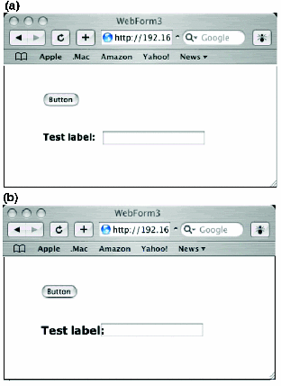

Figure 3:
(a) WebForm rendered (correctly) in Safari 1.2 (Mac OS X) with Listing One in machine.config; (b) WebForm rendered malformed in Safari 1.2 (Mac OS X) without Listing One in machine.config.
Back to Article